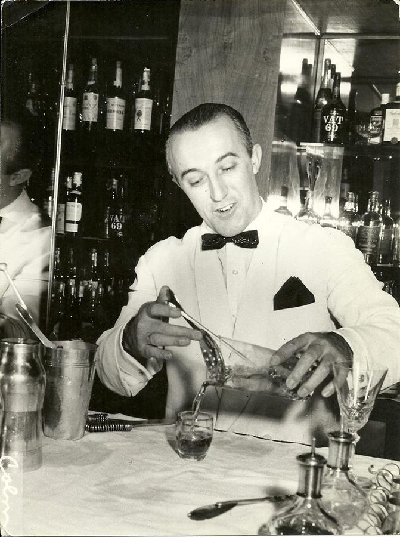
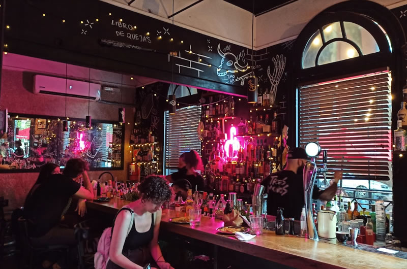
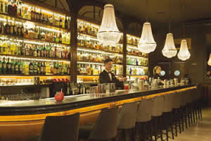
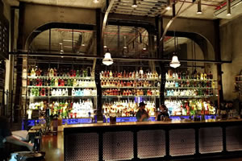

Historia del Barman

Como una profesión antigua, los bartenders, en un inicio, dirigían bares públicos y posadas. No solo preparaban tragos, de hecho, elaboraban el licor que servían. En Europa occidental, los barmans eran terratenientes, lo que demostraba su alta posición en la sociedad.
Posteriormente, esta tradición se trasladó a América.
Antes de la prohibición, la mixología era una expresión artística compleja. No obstante, su prohibición fortaleció aún más el estatus de los camareros. El hecho de que tenían que lidiar con sustancias ilegales hizo que su posición se vuelva más oscura, misteriosa e impresionante.
Además, infringir la ley implicó grandes ganancias. Hoy en día, el arte de la mixología es menos frecuente y la profesión ya no es tan mística como fue en un inicio, pero aún prospera.
Bares en Buenos Aires
-
Tres Monos
El bar Tres Monos, en Palermo, está en el puesto 85 del ranking The World’s 50 Best Bars. En sólo un año, se ubicó entre los 100 mejores del mundo. Excelente atención, tragos de autor y un ambiente con mucha onda. Tienen una buena carta de tragos y bebidas.
-
Presidente Bar
Este bar ubicado en el barrio de la recoleta se destaca por una excelente la ambientación, calidad y gusto en el diseño. Armado de diferentes tipos de lugares, màs privado, reto y la barra. Excelentes los tragos. La comida de alta calidad y bien servida en cuanto a la presentación y cantidad. La atención muy buena. Un lugar diferente, de nivel de excelencia. Los precios son altos pero valen la pena para un momento especial. Mejor hacer reserva si van a comer, de lo contrario pueden esperar bastante.
-
Uptown
The Uptown es un bar ambientado como una estación de Metro del Bronx en Nueva York. Ubicado en el barrio de Palermo, se destaca con sus tragos son super originales que salen de lo tradicional. Todas las mesas son con reserva previa sino hay que estar parado cerca de la barra. El servicio es muy bueno y los barman’s te aconsejan sobre que tomar. El precio promedio es de 1000 ARS por trago.